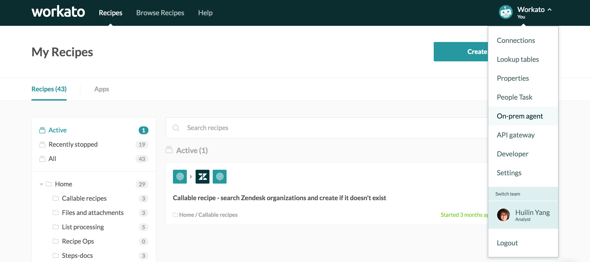
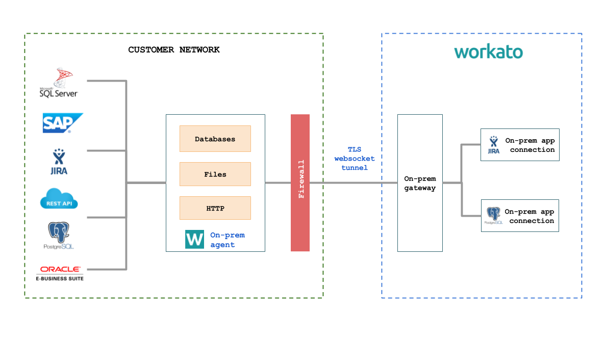

On-premise access
Enterprises have on-premises applications and databases that are deployed within their corporate datacenter. These apps are protected via firewalls, and therefore typically not easily accessible to cloud services like Workato.
The Workato on-premise agent provides a secure way for Workato to selectively access customer-authorized on-prem apps and databases without having to open ‘ports’ in the corporate firewall.
On-premise access is enabled only for certain plans. Check the Pricing and Plans page or reach out to Workato sales representatives at +1 (844) 469-6752 to find out more.
For Workato accounts with on-prem access, users are able to view the on-prem option on their account menu.
 On premise menu option
On-premise overview
The following is a conceptual model of Workato's on-premise agent and how it interacts with databases and applications behind the firewall.
 Conceptual model for on-prem agent and connector
Workato on-premise connectivity has 2 core components:
Tunneling
Database and filesystem access.
The on-prem agent runs within the customer’s data center, behind the firewall, and establishes a TLS websocket tunnel to connect out to Workato.
The on-prem agent can be configured to access the selected databases and filesystems behind the firewall.
Supported operating systems
The on-prem agent runs on the following systems:
Linux (64-bit)
Windows 7, 10 (64-bit)
For Windows, you need Administrator permissions to run the Workato agent as a Windows service. Please make sure that TCP port 3000 is available for binding.
Setting up on-prem access
Install agent
Windows
- Click on
Windows agentbutton to download and run the installer. Follow the installation instructions. - By default, the agent is installed into
C:\Program Files\Workato Agentfolder and creates aWorkatogroup in the Start Menu. - By default, the agent is installed as a Windows service called
WorkatoAgent. You can disable this feature by unchecking the corresponding option during install. - Click on
Download keybutton. Unzip thecert.zipfile to<INSTALL_HOME>\confdirectory (<INSTALL_HOME>is a target folder you've selected during install). This should copycert.keyandcert.pemfiles to the directory.
Linux
- Click on
Linux agentbutton. Unpack the agent package file to<INSTALL_HOME>. - Click on
Download keybutton. Unzip thecert.zipfile to<INSTALL_HOME>/confdirectory. This should copycert.keyandcert.pemfiles to the directory.
Create connection profiles
A single Workato agent can be used to connect with multiple backend apps. A connection profile uniquely identifies the back end app and contains the configuration information required to connect to that app.
Edit <INSTALL_HOME>/conf/config.yml file to configure your database connection profiles and filesystem access.
database:
profile1:
...
profile2:
...
files:
profile1:
...
profile2:
...
Database connection profiles are located in the database section of <INSTALL_HOME>/conf/config.yml.
The following databases are supported by the on-prem agent:
mysqlfor MySQLsqlserverfor Microsoft SQL Serveroraclefor Oracle Databasepostgresqlfor PostgreSQL.
A database type is specified either by adapter property or a complete JDBC URL provided in the url property.
Port numbers can be omitted when matching defaults for a given database type.
The example below has two connection profiles: marketing and sales. Do not use spaces or special characters in connection profile names.
database:
marketing:
adapter: sqlserver
username: sa
password: PaSsWoRd
host: localhost
database: marketing
timeout: 30
PostgreSQL URL-based configuration:
database:
sales:
url: jdbc:postgresql://sales.database:5432/sales
username: joe
password: Secret123
ApplicationName: workato
Working with on-prem files requires you to define a filesystem profile in the files section.
You need to specify the base folder for file access; the base folder will be used for resolving relative paths.
files:
hrfiles:
base: "C:/Documents/HR"
Note that you need to restart the on-prem agent for any configuration change to become effective.
Start agent
Windows 64-bit
The on-prem agent can be run as a Windows console application or as a Windows service.
NOTE: Installing and running the on-prem agent as a service require Administrator privileges.
Run the on-prem agent in console mode by launching by Workato → Run Agent (console) shortcut in the Start Menu.
You can use Run Agent (console) shortcut to ensure the agent is successfully connecting to Workato using the provided certificate.
Using Windows Service
- You need Administrator privileges to install the agent as a Windows service.
- Installer automatically registers the agent as a Windows service called
WorkatoAgent. - Note: Workato agent is not auto-started by default. Open Control Panel → System and Security → Administrative Tools → Services → WorkatoAgent service configuration to configure service auto-start.
Uninstalling
- You need Administrator privileges to uninstall the agent.
- Use
Workato→Uninstallshortcut to uninstall. - The service will shutdown automatically before uninstall.
- Uninstalling the agent does not remove any configuration files that you've created or modified.
Browsing log files
- When the on-prem agent is running as a Windows service, log files can be found at:
%SYSTEMROOT%\System32\LogFiles\Workato. There's also a shortcut to Workato log directory in theWorkatogroup found in Start Menu for convenience. - Service log files are only accessible to Administrators.
Linux 64-bit
Run the on-prem agent using the following bash script:
<INSTALL_HOME>/bin/run.sh
Creating recipes
There are no differences in how you work with on-prem apps within your recipe, but on-prem app connections do require special configuration. An on-prem app connection needs to point to a on-prem agent and a specific connection profile.
You can select the right on-prem agent from the pick list. Once you select the on-prem agent, enter the connection profile name as entered in the database section of the config.yml configuration file.
Common errors when using the on-prem agent
If connecting to on-prem applications fail, check that:
- Selected agent is active
- Credentials provided in the app connection are correct
- Credentials of user provided in the app connection has correct role and permission to connect
If connecting to on-prem databases fail, check that:
- Selected agent is active
- Credentials provided in the connection profile are correct
- Database name and type provided in the connection profile is correct
Example recipes
Salesforce case sync with on-prem SQL Server Quickbase data sync with SQL Server